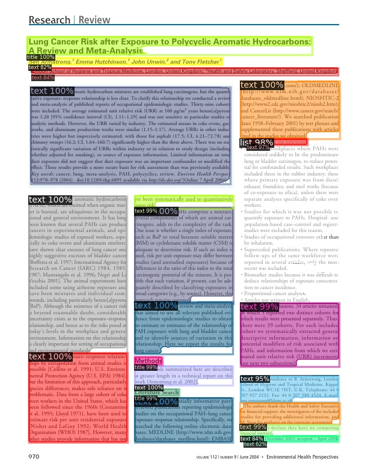

Transform document image analysis pipelines with the full power of Deep Learning.
What is Layout Praser?
A Unified Toolkit for Deep Learning Based Document Image Analysis
LAYOUT DETECTION
Deep Learning Models
Pre-trained Model Zoo
POST-PROCESSING
Layout Data structure
Visualization
Export and Storage
CUSTOMIZATION
Train Layout Models
Efficient Data Labeling
COMMUNITY & RESOURCES
Sharing Platform
Tutorial Video
Accurate Layout Detection with a Simple and Clean Interface
With the help of state-of-the-art deep learning models, Layout Parser enables extracting complicated document structures using only several lines of code. This method is also more robust and generalizable as no sophisticated rules are involved in this process.
▲ A set of universal APIs for performing layout detections on different types of documents.
A Wealth of Pre-trained Models on Different Datasets
To accommodate heterogenous document layout structures, Layout Parser a collection of DL models trained on different datasets. Currently the are 9 models trained on 5 diverse datasets, and they can be loaded via a unified interface.
▲ Exemplar images in the 5 used datasets (screenshots are taken from their papers or open-sourced datasets).
Layout Parser supports different levels of abstraction of layout data, and provide three classes of representation for layout data, namely, Coordinates, TextBlock, and Layout. The same operations and transformations are supported inter and intra these classes to maximize the efficiency when processing the layout data.
Layout Parser visualizes the layout data using a simple syntax: lp.draw_box or lp.draw_text. It provides two modes for displaying the layout data: Mode I directly overlays the layout region bounding boxes and categories over the original image. Mode II recreates the original document via drawing the OCR’d texts at their corresponding positions on the image canvas.
Layout Parser supports loading and exporting layout data to different formats, including general formats like csv, json, or domain-specific formats like PAGE, COCO, or METS/ALTO format (Full support for them will be released soon). It provides the flexibility for integrating Layout Parser with other document image analysis pipelines, and makes it easy to share your outputs with the community.
Easy to Train Your Own Layout Models with Best Accuracy
Layout Parser also comes with full support for customized layout model training on your own dataset. This enables you to achieve optimal prediction accuracy on your own dataset and can simplify your pipeline. Different training mode are supported, i.e., training from scratch or fine-tuning from an existing model. Learn more details at Layout-Parser/layout-model-training.
Easy to Train Your Own Layout Models with Best Accuracy
No labeled training data available? Don’t worry! Layout Parser also incorporates a data annotation toolkit that enables creating the training dataset much more efficiently. Shown in the illustration below, the tool loads layout predictions from pre-trained models (a), and users only need to select and check a small percentage of model predictions to correct or relabel (b). False-Negative Highlighter (c) helps recognize mis-identified objects from the model predictions. After these steps, the full image annotation is created with less effort.
▲ Illustration of the annotation interface with Object-Level Active Learning features. Learn more in this paper.
Layout Parser also aims to create a community platform for document image analysis (DIA) research and application. One key challenge in current DIA is the reusability of both layout models and pipelines. Layout Parser maintainers are currently working on implementing the platform for practitioners to share their models and pipelines easily. By streamline the distribution of layout models, as well as promoting the reusability of layout pipelines, it can potentially transform the DIA workflow and pipelines broadly.

Note: This is Layout Parser’s presentation video at ICDAR 2021, a top venue for document recognition and understanding. In this talk, we discussed the design of the Layout Parser and demoed its key features.
Get started!
Learn layout parser via a collection of carefully curated tutorials.